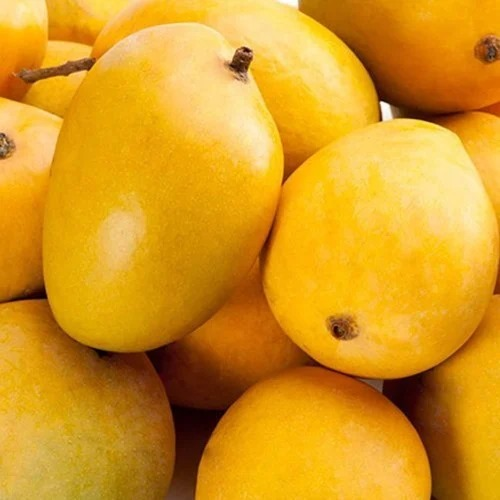
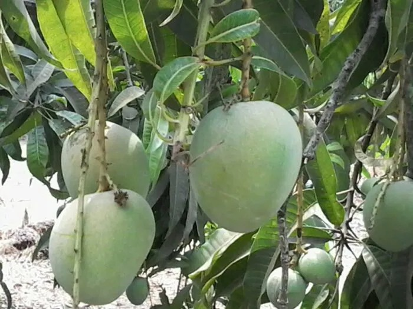

🥭 Mango Varieties in India

Totapuri Mango
Type: Commercial / Table & Processing Variety
Where it is grown: Karnataka, Andhra Pradesh, Tamil Nadu, Telangana (Bengaluru, Krishnagiri, Chittoor, Salem)
About: Totapuri Mango is widely used for pulp, juices, and pickles. Recognized by its elongated shape with a parrot-like beak, it has a tangy-sweet taste and firm pulp, making it a top choice for processing.

Alphonso Mango
Type: Premium Dessert Variety
Where it is grown: Maharashtra (Ratnagiri, Sindhudurg), Gujarat, Karnataka, Tamil Nadu
About: Known as the “King of Mangoes,” Alphonso has unmatched sweetness, saffron-colored pulp, rich aroma, and fibreless texture. Highly demanded in domestic and export markets for its premium quality.

Ratnagiri Mango
Type: Premium Variety / Commercial & Export
Where it is grown: Ratnagiri, Sindhudurg, Raigad, Konkan (Maharashtra)
About: GI-tagged Ratnagiri Alphonso is world-famous for its golden-yellow color, rich aroma, and superior sweetness. Unique coastal climate gives this mango its exceptional flavor, making it highly export-worthy.